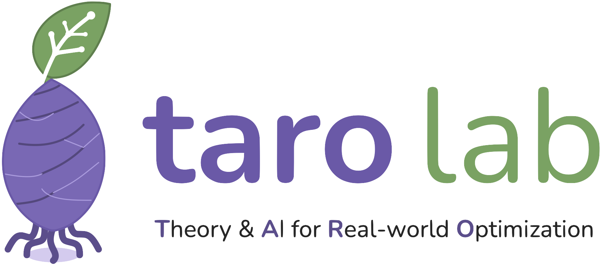

taro
Recruiting highly motivated PhD, Masters, and undergraduate students.
Fill up the Google Form here
News
May 2026
We'll be heading to ICML 2026 in Seoul, South Korea. See you there!
May 2026
taro
Research
To be updated from Jan 2027.People
Principal Investigator
Current members
Collaborators